Branding
He tenido la oportunidad de trabajar en branding en distintos niveles, lo que me ha brindado una comprensión sólida de cómo cada elemento contribuye a construir una identidad visual fuerte. Mi experiencia abarca desde la creación de logotipos, paletas de color y sistemas gráficos para empresas y organizaciones con necesidades diversas, hasta el desarrollo de manuales completos de marca desde cero.
Uno de mis desafíos más enriquecedores fue crear la identidad visual completa y el manual de marca para una nueva marca lanzada por una gran empresa del sector de la belleza, un proceso que requirió un profundo pensamiento conceptual y alineación estratégica.

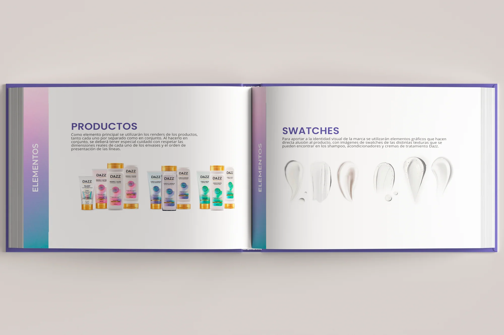
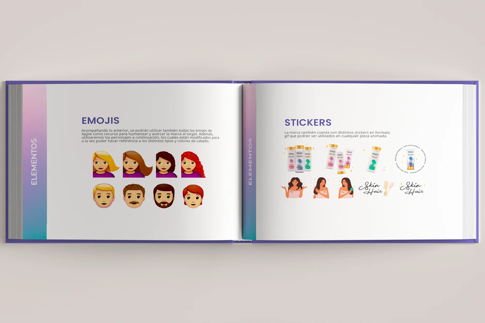
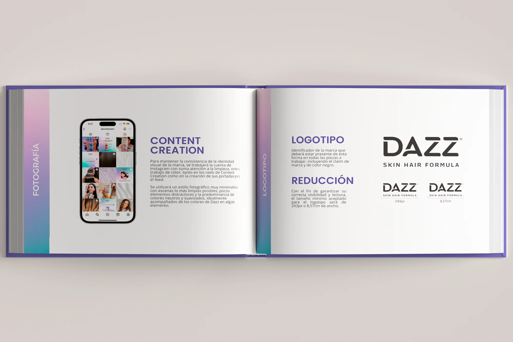
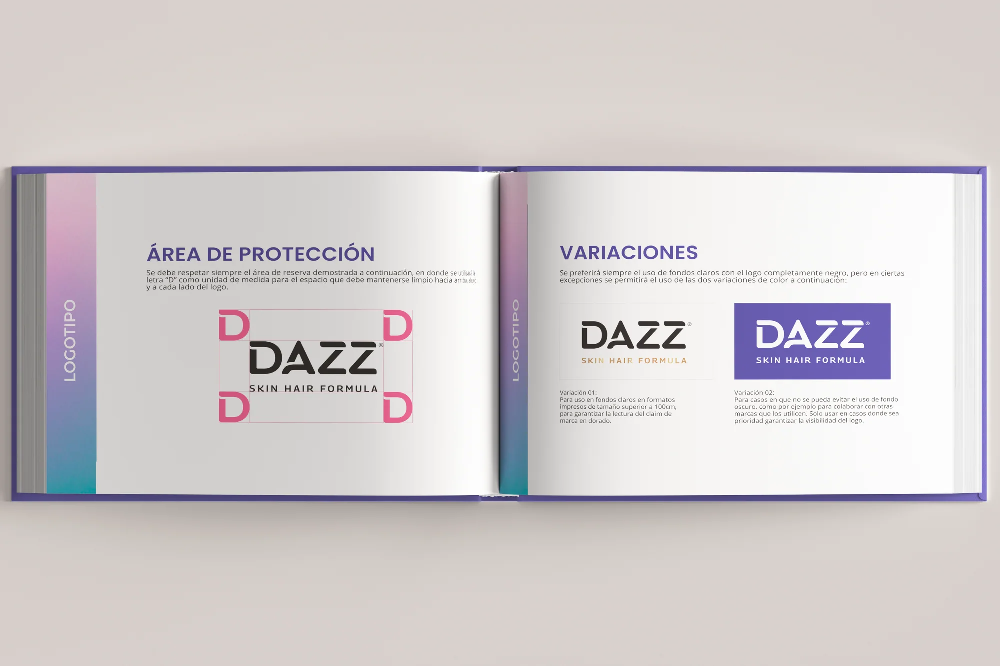
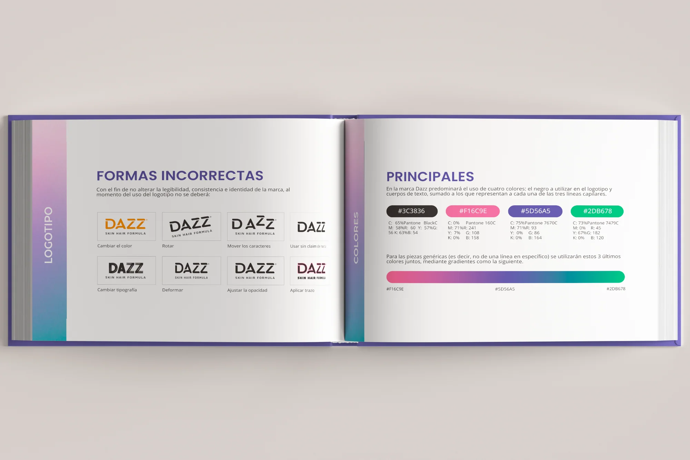
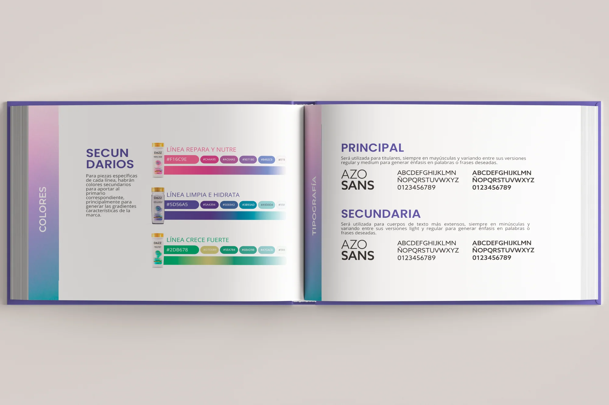
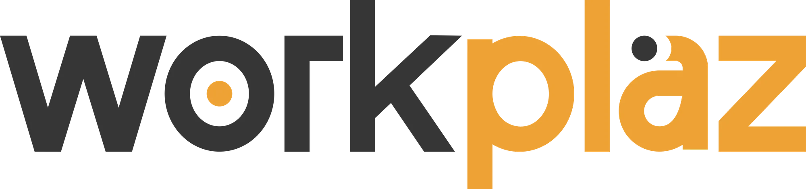
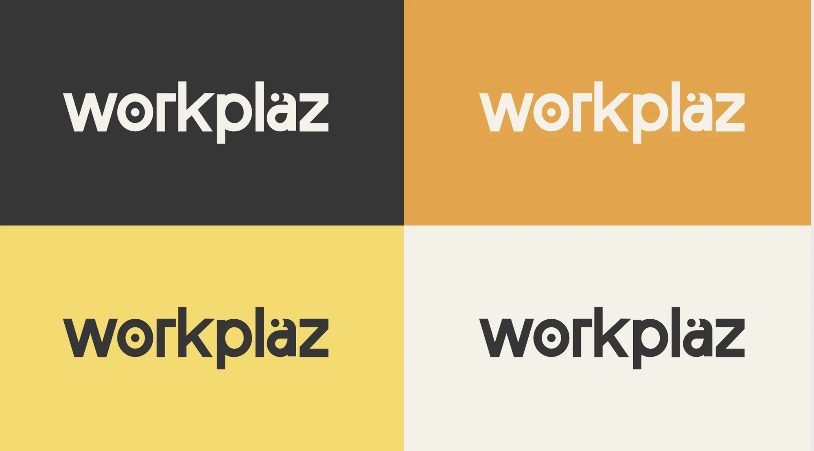
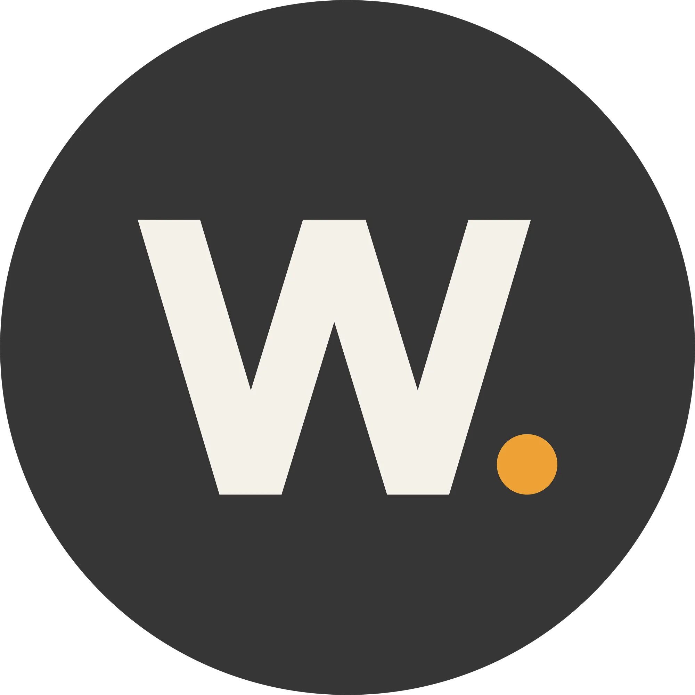
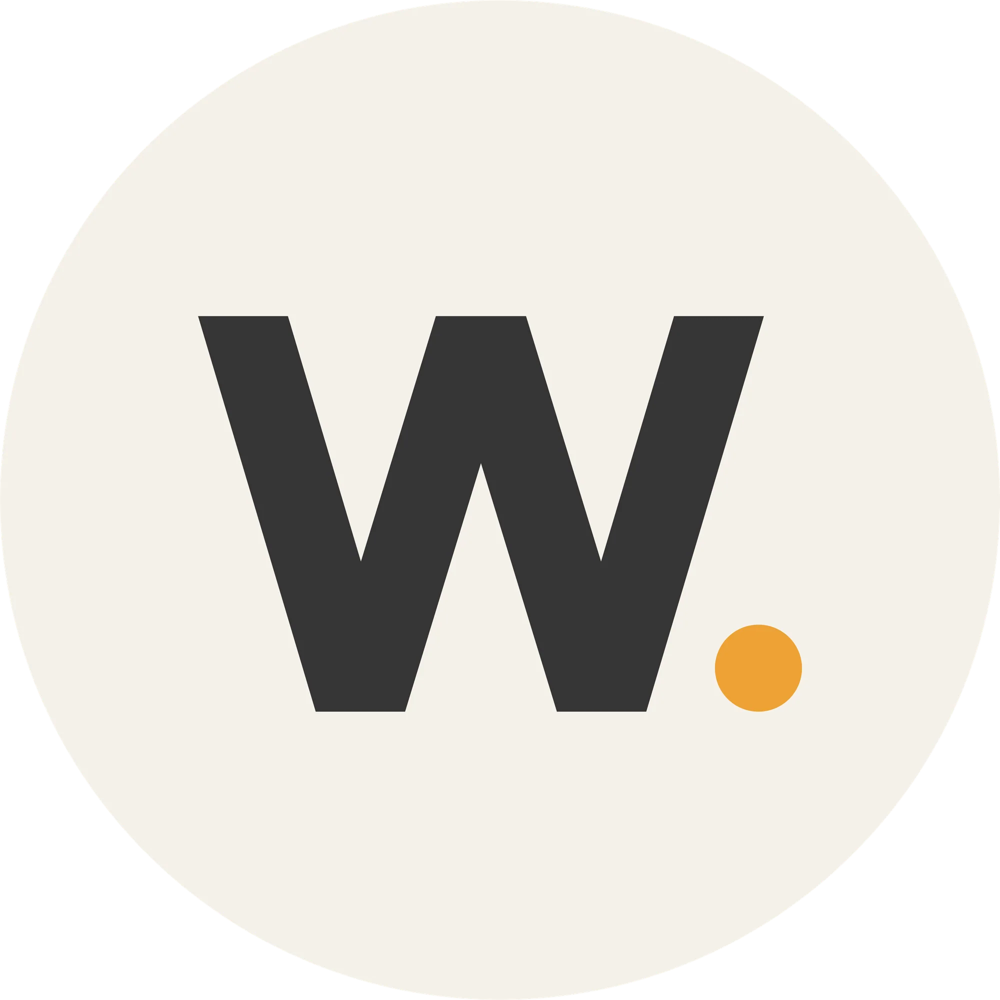
Diseño de identidad gráfica para una nueva plataforma digital de búsqueda de empleo, específicamente en la industria de la construcción.
Esto incluyó una paleta de colores adecuada al contexto, un logotipo moderno que reflejara la naturaleza digital de la plataforma a la vez que se diferenciara de empresas similares, y un isotipo diseñado para su uso en versiones reducidas en redes sociales.
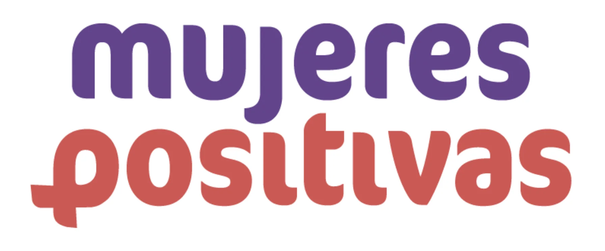
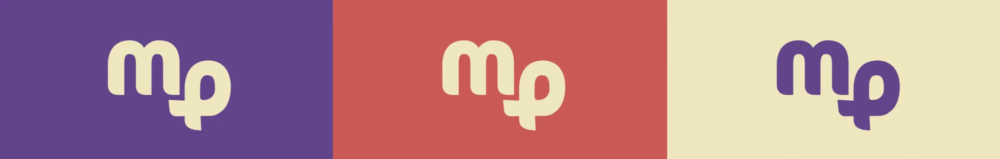
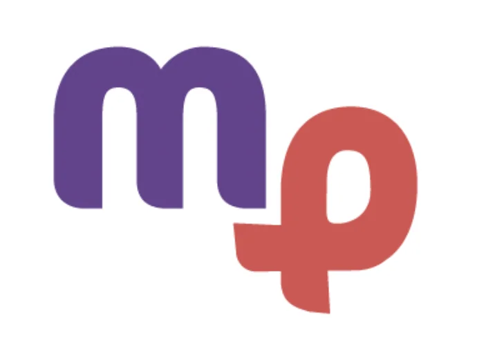
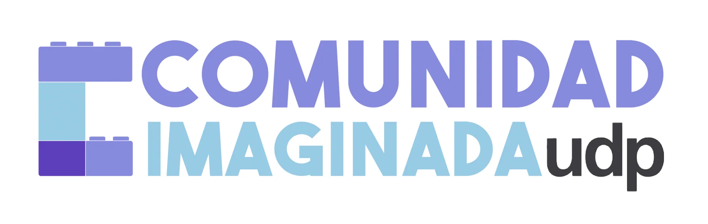
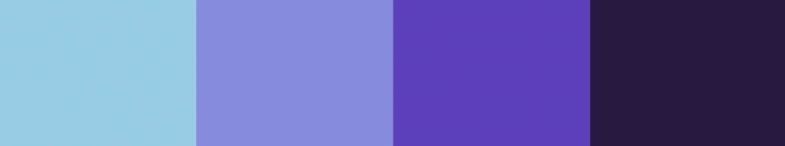
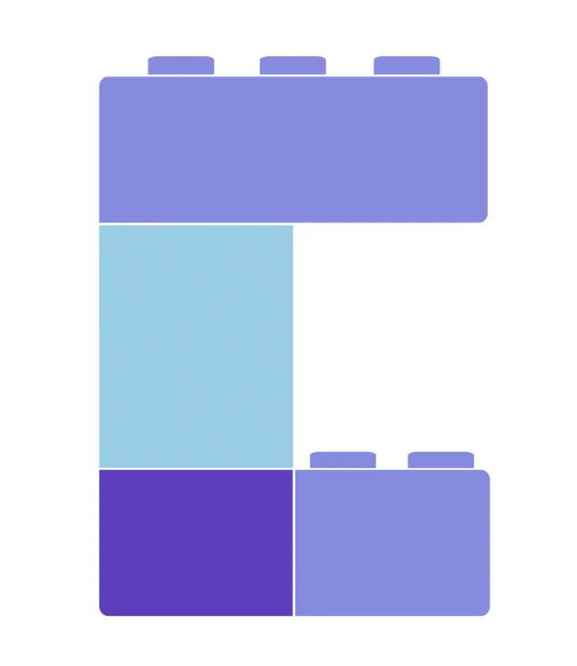
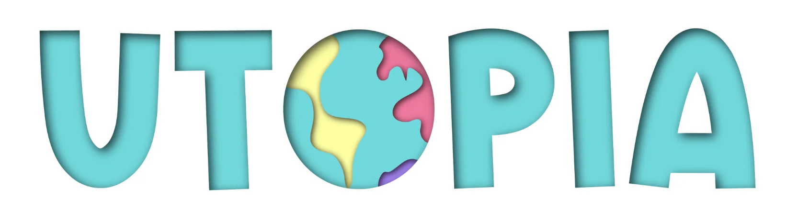
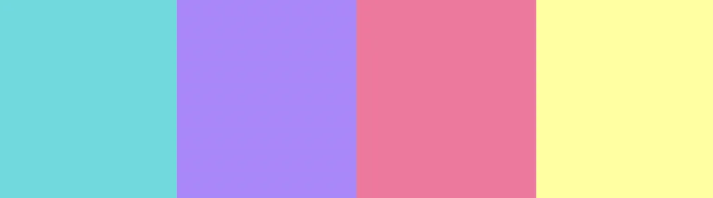
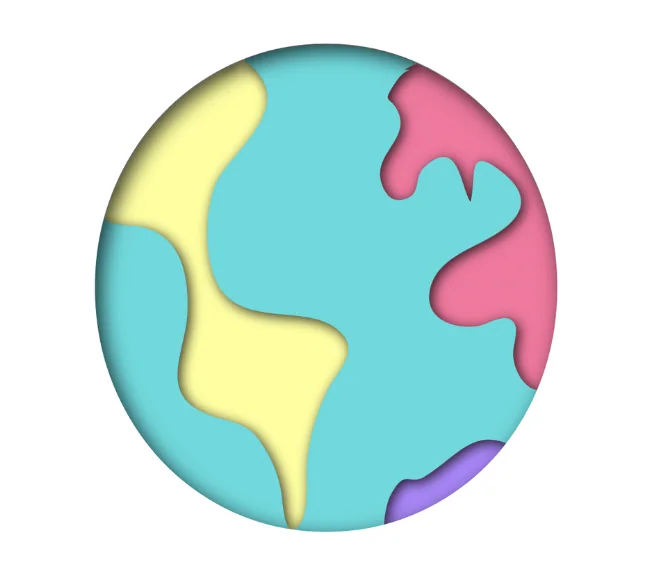